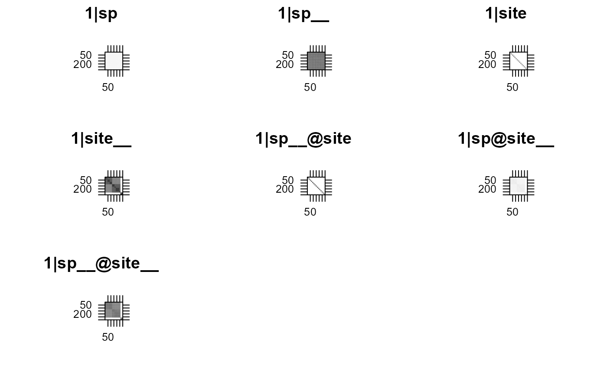

This function performs Generalized Linear Mixed Models for binary, count,
and continuous data, estimating regression coefficients with
approximate standard errors. It is specifically designed for community data
in which species occur within multiple sites (locations).
A Bayesian version of PGLMM uses the package INLA,
which is not available on CRAN yet. If you wish to use this option,
you must first install INLA from https://www.r-inla.org/ by running
install.packages('INLA', repos='https://www.math.ntnu.no/inla/R/stable') in R.
pglmm(
formula,
data = NULL,
family = "gaussian",
cov_ranef = NULL,
random.effects = NULL,
REML = TRUE,
optimizer = c("nelder-mead-nlopt", "bobyqa", "Nelder-Mead", "subplex"),
repulsion = FALSE,
add.obs.re = TRUE,
verbose = FALSE,
cpp = TRUE,
bayes = FALSE,
s2.init = NULL,
B.init = NULL,
reltol = 10^-6,
maxit = 500,
tol.pql = 10^-6,
maxit.pql = 200,
marginal.summ = "mean",
calc.DIC = TRUE,
calc.WAIC = TRUE,
prior = "inla.default",
prior_alpha = 0.1,
prior_mu = 1,
ML.init = FALSE,
tree = NULL,
tree_site = NULL,
sp = NULL,
site = NULL,
bayes_options = NULL,
bayes_nested_matrix_as_list = FALSE
)
communityPGLMM(
formula,
data = NULL,
family = "gaussian",
cov_ranef = NULL,
random.effects = NULL,
REML = TRUE,
optimizer = c("nelder-mead-nlopt", "bobyqa", "Nelder-Mead", "subplex"),
repulsion = FALSE,
add.obs.re = TRUE,
verbose = FALSE,
cpp = TRUE,
bayes = FALSE,
s2.init = NULL,
B.init = NULL,
reltol = 10^-6,
maxit = 500,
tol.pql = 10^-6,
maxit.pql = 200,
marginal.summ = "mean",
calc.DIC = TRUE,
calc.WAIC = TRUE,
prior = "inla.default",
prior_alpha = 0.1,
prior_mu = 1,
ML.init = FALSE,
tree = NULL,
tree_site = NULL,
sp = NULL,
site = NULL,
bayes_options = NULL,
bayes_nested_matrix_as_list = FALSE
)A two-sided linear formula object describing the mixed effects of the model.
To specify that a random term should have phylogenetic covariance matrix along
with non-phylogenetic one, add __ (two underscores) at the end of the group variable;
e.g., + (1 | sp__) will construct two random terms,
one with phylogenetic covariance matrix and another with non-phylogenetic (identity) matrix.
In contrast, __ in the nested terms (below) will only create a phylogenetic covariance matrix.
Nested random terms have the general form (1|sp__@site__) which represents
phylogenetically related species nested within correlated sites.
This form can be used for bipartite questions. For example, species could be
phylogenetically related pollinators and sites could be phylogenetically related plants, leading to
the random effect (1|insects__@plants__). If more than one phylogeny is used, remember to add
all to the argument cov_ranef = list(insects = insect_phylo, plants = plant_phylo). Phylogenetic correlations can
be dropped by removing the __ underscores. Thus, the form (1|sp@site__) excludes the phylogenetic
correlations among species, while the form (1|sp__@site) excludes the correlations among sites.
Note that correlated random terms are not allowed. For example,
(x|g) will be the same as (0 + x|g) in the lme4::lmer syntax. However,
(x1 + x2|g) won't work, so instead use (x1|g) + (x2|g).
A data.frame containing the variables named in formula.
Either "gaussian" for a Linear Mixed Model, or
"binomial" or "poisson" for Generalized Linear Mixed Models.
"family" should be specified as a character string (i.e., quoted). For binomial and
Poisson data, we use the canonical logit and log link functions, respectively.
Binomial data can be either presence/absence, or a two-column array of 'successes' and 'failures'.
For both binomial and Poisson data, we add an observation-level
random term by default via add.obs.re = TRUE. If bayes = TRUE there are
two additional families available: "zeroinflated.binomial", and "zeroinflated.poisson",
which add a zero inflation parameter; this parameter gives the probability that the response is
a zero. The rest of the parameters of the model then reflect the "non-zero" part part
of the model. Note that "zeroinflated.binomial" only makes sense for success/failure
response data.
A named list of covariance matrices of random terms. The names should be the
group variables that are used as random terms with specified covariance matrices
(without the two underscores, e.g. list(sp = tree1, site = tree2)). The actual object
can be either a phylogeny with class "phylo" or a prepared covariance matrix. If it is a phylogeny,
pglmm will prune it and then convert it to a covariance matrix assuming Brownian motion evolution.
pglmm will also standardize all covariance matrices to have determinant of one. Group variables
will be converted to factors and all covariance matrices will be rearranged so that rows and
columns are in the same order as the levels of their corresponding group variables.
Optional pre-build list of random effects. If NULL (the default),
the function prep_dat_pglmm will prepare the random effects for you from the information
in formula, data, and cov_ranef. random.effect allows a list of
pre-generated random effects terms to increase flexibility; for example, this makes it
possible to construct models with both phylogenetic correlation and spatio-temporal autocorrelation.
In preparing random.effect, make sure that the orders of rows and columns of
covariance matrices in the list are the same as their corresponding group variables
in the data. Also, this should be a list of lists, e.g.
random.effects = list(re1 = list(matrix_a), re2 = list(1, sp = sp, covar = Vsp)).
Whether REML or ML is used for model fitting the random effects. Ignored if
bayes = TRUE.
nelder-mead-nlopt (default), bobyqa, Nelder-Mead, or subplex.
Nelder-Mead is from the stats package and the other optimizers are from the nloptr package.
Ignored if bayes = TRUE.
When there are nested random terms specified, repulsion = FALSE tests
for phylogenetic underdispersion while repulsion = FALSE tests for overdispersion.
This argument is a logical vector of length either 1 or >1.
If its length is 1, then all covariance matrices in nested terms will be either
inverted (overdispersion) or not. If its length is >1, then you can select
which covariance matrix in the nested terms to be inverted. Make sure to get
the length right: for all the terms with @, count the number of "__"
to determine the length of repulsion. For example, sp__@site and sp@site__
will each require one element of repulsion, while sp__@site__ will take two
elements (repulsion for sp and repulsion for site). Therefore, if your nested terms are
(1|sp__@site) + (1|sp@site__) + (1|sp__@site__), then you should set the
repulsion to be something like c(TRUE, FALSE, TRUE, TRUE) (length of 4).
Whether to add an observation-level random term for binomial or Poisson
distributions. Normally it would be a good idea to add this to account for overdispersion,
so add.obs.re = TRUE by default.
If TRUE, the model deviance and running
estimates of s2 and B are plotted each iteration
during optimization.
Whether to use C++ function for optim. Default is TRUE. Ignored if bayes = TRUE.
Whether to fit a Bayesian version of the PGLMM using r-inla.
An array of initial estimates of s2 for each random
effect that scales the variance. If s2.init is not provided for
family="gaussian", these are estimated using lm assuming
no phylogenetic signal. A better approach might be to run link[lme4:lmer]{lmer}
and use the output random effects for s2.init. If s2.init is not
provided for family = "binomial", these are set to 0.25.
Initial estimates of \(B\), a matrix containing
regression coefficients in the model for the fixed effects. This
matrix must have dim(B.init) = c(p + 1, 1), where p is the
number of predictor (independent) variables; the first element of
B corresponds to the intercept, and the remaining elements
correspond in order to the predictor (independent) variables in the
formula. If B.init is not provided, these are estimated
using lm or glm assuming no phylogenetic signal.
A better approach might be to run lmer and use the
output fixed effects for B.init. When bayes = TRUE, initial values are estimated
using the maximum likelihood fit unless ML.init = FALSE, in
which case the default INLA initial values will be used.
A control parameter dictating the relative tolerance
for convergence in the optimization; see optim.
A control parameter dictating the maximum number of
iterations in the optimization; see optim.
A control parameter dictating the tolerance for
convergence in the PQL estimates of the mean components of the
GLMM. Ignored if family = "gaussian" or bayes = TRUE.
A control parameter dictating the maximum number
of iterations in the PQL estimates of the mean components of the
GLMM. Ignored if family = "gaussian" or bayes = TRUE.
Summary statistic to use for the estimate of coefficients when
doing a Bayesian PGLMM (when bayes = TRUE). Options are: "mean",
"median", or "mode", referring to different characterizations of the central
tendency of the Bayesian posterior marginal distributions. Ignored if bayes = FALSE.
Should the Deviance Information Criterion be calculated and returned
when doing a Bayesian PGLMM? Ignored if bayes = FALSE.
Should the WAIC be calculated and returned
when doing a Bayesian PGLMM? Ignored if bayes = FALSE.
Which type of default prior should be used by pglmm?
Only used if bayes = TRUE. There are currently four options:
"inla.default", which uses the default INLA priors; "pc.prior.auto", which uses a
complexity penalizing prior (as described in
Simpson et al. (2017)) designed to automatically
choose good parameters (only available for gaussian and binomial responses); "pc.prior", which
allows the user to set custom parameters on the "pc.prior" prior, using the prior_alpha
and prior_mu parameters (Run INLA::inla.doc("pc.prec") for details on these
parameters); and "uninformative", which sets a very uninformative prior
(nearly uniform) by using a very flat exponential distribution. The last option is generally
not recommended but may in some cases give estimates closer to the maximum likelihood estimates.
"pc.prior.auto" is only implemented for family = "gaussian" and family = "binomial"
currently.
Only used if bayes = TRUE and prior = "pc.prior", in
which case it sets the alpha parameter of INLA's complexity penalizing prior for the
random effects. The prior is an exponential distribution where prob(sd > mu) = alpha,
where sd is the standard deviation of the random effect.
Only used if bayes = TRUE and prior = "pc.prior", in
which case it sets the mu parameter of INLA's complexity penalizing prior for the
random effects. The prior is an exponential distribution where prob(sd > mu) = alpha,
where sd is the standard deviation of the random effect.
Only relevant if bayes = TRUE. Should maximum
likelihood estimates be calculated and used as initial values for
the Bayesian model fit? Sometimes this can be helpful, but it may not help; thus,
we set the default to FALSE. Also, it
does not work with the zero-inflated families.
A phylogeny for column sp, with "phylo" class, or a covariance matrix for sp.
Make sure to have all species in the matrix; if the matrix is not standardized,
(i.e., det(tree) != 1), pglmm will try to standardize it for you.
No longer used: keep here for compatibility.
A second phylogeny for "site". This is required only if the site column contains species instead of sites. This can be used for bipartitie questions; tree_site can also be a covariance matrix. Make sure to have all sites in the matrix; if the matrix is not standardized (i.e., det(tree_site) != 1), pglmm` will try to standardize it for you. No longer used: keep here for compatibility.
No longer used: keep here for compatibility.
No longer used: keep here for compatibility.
Additional options to pass to INLA for if bayes = TRUE. A named list where the names
correspond to parameters in the inla function. One special option is diagonal: if an element in
the options list is names diagonal this tells INLA to add its value to the diagonal of the random effects
precision matrices. This can help with numerical stability if the model is ill-conditioned (if you get a lot of warnings,
try setting this to list(diagonal = 1e-4)).
For bayes = TRUE, prepare the nested terms as a list of length of 4 as the old way?
An object (list) of class communityPGLMM with the following elements:
the formula for fixed effects
the formula for both fixed effects and random effects
the dataset
gaussian, binomial, or poisson depending on the model fit
the list of random effects
estimates of the regression coefficients
approximate standard errors of the fixed effects regression coefficients.
This is set to NULL if bayes = TRUE.
approximate Bayesian credible interval of the fixed effects regression coefficients.
This is set to NULL if bayes = FALSE
approximate covariance matrix for the fixed effects regression coefficients
approximate Z scores for the fixed effects regression coefficients. This is set to NULL if bayes = TRUE
approximate tests for the fixed effects regression coefficients being different from zero. This is set to NULL if bayes = TRUE
standard deviations of the random effects for the covariance matrix \(\sigma^2V\) for each random effect in order. For the linear mixed model, the residual variance is listed last.
random effects variances for non-nested random effects
random effects variances for nested random effects
for linear mixed models, the residual variance
Bayesian credible interval for random effects variances for non-nested random effects.
This is set to NULL if bayes = FALSE
Bayesian credible interval for random effects variances for nested random effects.
This is set to NULL if bayes = FALSE
Bayesian credible interval for linear mixed models, the residual variance.
This is set to NULL if bayes = FALSE
for linear mixed models, the log-likelihood for either the restricted likelihood (REML=TRUE) or the overall likelihood (REML=FALSE). This is set to NULL for generalized linear mixed models. If bayes = TRUE, this is the marginal log-likelihood
for linear mixed models, the AIC for either the restricted likelihood (REML = TRUE) or the overall likelihood (REML = FALSE). This is set to NULL for generalised linear mixed models
for linear mixed models, the BIC for either the restricted likelihood (REML = TRUE) or the overall likelihood (REML = FALSE). This is set to NULL for generalised linear mixed models
for Bayesian PGLMM, this is the Deviance Information Criterion metric of model fit. This is set to NULL if bayes = FALSE.
whether or not REML is used (TRUE or FALSE).
whether or not a Bayesian model was fit.
The specified summary statistic used to summarize the Bayesian marginal distributions.
Only present if bayes = TRUE
the user-provided initial estimates of s2
the user-provided initial estimates of B
the response (dependent) variable returned in matrix form
the predictor (independent) variables returned in matrix form (including 1s in the first column)
the residuals. For linear mixed models, this does not account for random terms,
To get residuals after accounting for both fixed and random terms, use residuals().
For the generalized linear mixed model, these are the predicted residuals in the
logit -1 space.
the inverse of the covariance matrix for the entire system (of dimension (nsp * nsite)
by (nsp * nsite)). This is NULL if bayes = TRUE.
predicted mean values for the generalized linear mixed model (i.e., similar to fitted(merMod)).
Set to NULL for linear mixed models, for which we can use fitted().
matrices used to construct the nested design matrix. This is set to NULL if bayes = TRUE
the design matrix for random effects. This is set to NULL if bayes = TRUE
diagonal matrix that maps the random effects variances onto the design matrix
the convergence code provided by optim. This is set to NULL if bayes = TRUE
number of iterations performed by optim. This is set to NULL if bayes = TRUE
Model object fit by underlying inla function. Only returned
if bayes = TRUE
For Gaussian data, pglmm analyzes the phylogenetic linear mixed model
$$Y = \beta_0 + \beta_1x + b_0 + b_1x$$ $$b_0 ~ Gaussian(0, \sigma_0^2I_{sp})$$ $$b_1 ~ Gaussian(0, \sigma_0^2V_{sp})$$ $$\eta ~ Gaussian(0,\sigma^2)$$
where \(\beta_0\) and \(\beta_1\) are fixed effects, and \(V_{sp}\) is a variance-covariance matrix derived from a phylogeny (typically under the assumption of Brownian motion evolution). Here, the variation in the mean (intercept) for each species is given by the random effect \(b_0\) that is assumed to be independent among species. Variation in species' responses to predictor variable \(x\) is given by a random effect \(b_0\) that is assumed to depend on the phylogenetic relatedness among species given by \(V_{sp}\); if species are closely related, their specific responses to \(x\) will be similar. This particular model would be specified as
z <- pglmm(Y ~ X + (1|sp__), data = data, family = "gaussian", cov_ranef = list(sp = phy))
Or you can prepare the random terms manually (not recommended for simple models but may be necessary for complex models):
re.1 <- list(1, sp = dat$sp, covar = diag(nspp))
re.2 <- list(dat$X, sp = dat$sp, covar = Vsp)
z <- pglmm(Y ~ X, data = data, family = "gaussian", random.effects = list(re.1, re.2))
The covariance matrix covar is standardized to have its determinant equal to 1. This in effect standardizes the interpretation of the scalar \(\sigma^2\). Although mathematically this is not required, it is a very good idea to standardize the predictor (independent) variables to have mean 0 and variance 1. This will make the function more robust and improve the interpretation of the regression coefficients. For categorical (factor) predictor variables, you will need to construct 0-1 dummy variables, and these should not be standardized (for obvious reasons).
For binary generalized linear mixed models (family =
'binomial'), the function estimates parameters for the model of
the form, for example,
$$y = \beta_0 + \beta_1x + b_0 + b_1x$$ $$Y = logit^{-1}(y)$$ $$b_0 ~ Gaussian(0, \sigma_0^2I_{sp})$$ $$b_1 ~ Gaussian(0, \sigma_0^2V_{sp})$$
where \(\beta_0\) and \(\beta_1\) are fixed effects, and \(V_{sp}\) is a variance-covariance matrix derived from a phylogeny (typically under the assumption of Brownian motion evolution).
z <- pglmm(Y ~ X + (1|sp__), data = data, family = "binomial", cov_ranef = list(sp = phy))
As with the linear mixed model, it is a very good idea to standardize the predictor (independent) variables to have mean 0 and variance 1. This will make the function more robust and improve the interpretation of the regression coefficients.
Ives, A. R. and M. R. Helmus. 2011. Generalized linear mixed models for phylogenetic analyses of community structure. Ecological Monographs 81:511-525.
Ives A. R. 2018. Mixed and phylogenetic models: a conceptual introduction to correlated data. https://leanpub.com/correlateddata.
Rafferty, N. E., and A. R. Ives. 2013. Phylogenetic trait-based analyses of ecological networks. Ecology 94:2321-2333.
Simpson, Daniel, et al. 2017. Penalising model component complexity: A principled, practical approach to constructing priors. Statistical science 32(1): 1-28.
Li, D., Ives, A. R., & Waller, D. M. 2017. Can functional traits account for phylogenetic signal in community composition? New Phytologist, 214(2), 607-618.
## Structure of examples:
# First, a (brief) description of model types, and how they are specified
# - these are *not* to be run 'as-is'; they show how models should be organised
# Second, a run-through of how to simulate, and then analyse, data
# - these *are* to be run 'as-is'; they show how to format and work with data
# \donttest{
#############################################
### Brief summary of models and their use ###
#############################################
## Model structures from Ives & Helmus (2011)
if(FALSE){
# dat = data set for regression (note: must have a column "sp" and a column "site")
# phy = phylogeny of class "phylo"
# repulsion = to test phylogenetic repulsion or not
# Model 1 (Eq. 1)
z <- pglmm(freq ~ sp + (1|site) + (1|sp__@site), data = dat, family = "binomial",
cov_ranef = list(sp = phy), REML = TRUE, verbose = TRUE, s2.init = .1)
# Model 2 (Eq. 2)
z <- pglmm(freq ~ sp + X + (1|site) + (X|sp__), data = dat, family = "binomial",
cov_ranef = list(sp = phy), REML = TRUE, verbose = TRUE, s2.init = .1)
# Model 3 (Eq. 3)
z <- pglmm(freq ~ sp*X + (1|site) + (1|sp__@site), data = dat, family = "binomial",
cov_ranef = list(sp = phy), REML = TRUE, verbose = TRUE, s2.init = .1)
## Model structure from Rafferty & Ives (2013) (Eq. 3)
# dat = data set
# phyPol = phylogeny for pollinators (pol)
# phyPlt = phylogeny for plants (plt)
z <- pglmm(freq ~ pol * X + (1|pol__) + (1|plt__) + (1|pol__@plt) +
(1|pol@plt__) + (1|pol__@plt__),
data = dat, family = "binomial",
cov_ranef = list(pol = phyPol, plt = phyPlt),
REML = TRUE, verbose = TRUE, s2.init = .1)
}
#####################################################
### Detailed analysis showing covariance matrices ###
#####################################################
# This is the example from section 4.3 in Ives, A. R. (2018) Mixed
# and phylogenetic models: a conceptual introduction to correlated data.
library(ape)
#> Warning: package 'ape' was built under R version 4.2.2
library(mvtnorm)
# Investigating covariance matrices for different types of model structure
nspp <- 6
nsite <- 4
# Simulate a phylogeny that has a lot of phylogenetic signal (power = 1.3)
phy <- compute.brlen(rtree(n = nspp), method = "Grafen", power = 1.3)
# Simulate species means
sd.sp <- 1
mean.sp <- rTraitCont(phy, model = "BM", sigma=sd.sp^2)
# Replicate values of mean.sp over sites
Y.sp <- rep(mean.sp, times=nsite)
# Simulate site means
sd.site <- 1
mean.site <- rnorm(nsite, sd=sd.site)
# Replicate values of mean.site over sp
Y.site <- rep(mean.site, each=nspp)
# Compute a covariance matrix for phylogenetic attraction
sd.attract <- 1
Vphy <- vcv(phy)
# Standardize the phylogenetic covariance matrix to have determinant = 1.
# (For an explanation of this standardization, see subsection 4.3.1 in Ives (2018))
Vphy <- Vphy/(det(Vphy)^(1/nspp))
# Construct the overall covariance matrix for phylogenetic attraction.
# (For an explanation of Kronecker products, see subsection 4.3.1 in the book)
V <- kronecker(diag(nrow = nsite, ncol = nsite), Vphy)
Y.attract <- array(t(rmvnorm(n = 1, sigma = sd.attract^2*V)))
# Simulate residual errors
sd.e <- 1
Y.e <- rnorm(nspp*nsite, sd = sd.e)
# Construct the dataset
d <- data.frame(sp = rep(phy$tip.label, times = nsite),
site = rep(1:nsite, each = nspp))
# Simulate abundance data
d$Y <- Y.sp + Y.site + Y.attract + Y.e
# Analyze the model
pglmm(Y ~ 1 + (1|sp__) + (1|site) + (1|sp__@site), data = d, cov_ranef = list(sp = phy))
#> as(<matrix>, "dgTMatrix") is deprecated since Matrix 1.5-0; do as(as(as(., "dMatrix"), "generalMatrix"), "TsparseMatrix") instead
#> Linear mixed model fit by restricted maximum likelihood
#>
#> Call:Y ~ 1
#> <environment: 0x000001ff72f0ee60>
#>
#> logLik AIC BIC
#> -45.13 102.26 102.46
#>
#> Random effects:
#> Variance Std.Dev
#> 1|sp 2.105e-01 0.4587672
#> 1|sp__ 1.450e-07 0.0003809
#> 1|site 2.580e-06 0.0016062
#> 1|sp__@site 1.946e+00 1.3950764
#> residual 5.906e-01 0.7685368
#>
#> Fixed effects:
#> Value Std.Error Zscore Pvalue
#> (Intercept) -0.086412 0.664073 -0.1301 0.8965
#>
# Display random effects: the function `pglmm_plot_ranef()` does what
# the name implies. You can set `show.image = TRUE` and `show.sim.image = TRUE`
# to see the matrices and simulations.
re <- pglmm_plot_ranef(Y ~ 1 + (1|sp__) + (1|site) + (1|sp__@site), data = d,
cov_ranef = list(sp = phy), show.image = FALSE,
show.sim.image = FALSE)
#################################################
### Example of a bipartite phylogenetic model ###
#################################################
# Investigating covariance matrices for different types of model structure
nspp <- 20
nsite <- 15
# Simulate a phylogeny that has a lot of phylogenetic signal (power = 1.3)
phy.sp <- compute.brlen(rtree(n = nspp), method = "Grafen", power = 1.3)
phy.site <- compute.brlen(rtree(n = nsite), method = "Grafen", power = 1.3)
# Simulate species means
mean.sp <- rTraitCont(phy.sp, model = "BM", sigma = 1)
# Replicate values of mean.sp over sites
Y.sp <- rep(mean.sp, times = nsite)
# Simulate site means
mean.site <- rTraitCont(phy.site, model = "BM", sigma = 1)
# Replicate values of mean.site over sp
Y.site <- rep(mean.site, each = nspp)
# Generate covariance matrix for phylogenetic attraction among species
sd.sp.attract <- 1
Vphy.sp <- vcv(phy.sp)
Vphy.sp <- Vphy.sp/(det(Vphy.sp)^(1/nspp))
V.sp <- kronecker(diag(nrow = nsite, ncol = nsite), Vphy.sp)
Y.sp.attract <- array(t(rmvnorm(n = 1, sigma = sd.sp.attract^2*V.sp)))
# Generate covariance matrix for phylogenetic attraction among sites
sd.site.attract <- 1
Vphy.site <- vcv(phy.site)
Vphy.site <- Vphy.site/(det(Vphy.site)^(1/nsite))
V.site <- kronecker(Vphy.site, diag(nrow = nspp, ncol = nspp))
Y.site.attract <- array(t(rmvnorm(n = 1, sigma = sd.site.attract^2*V.site)))
# Generate covariance matrix for phylogenetic attraction of species:site interaction
sd.sp.site.attract <- 1
V.sp.site <- kronecker(Vphy.site, Vphy.sp)
Y.sp.site.attract <- array(t(rmvnorm(n = 1, sigma = sd.sp.site.attract^2*V.sp.site)))
# Simulate residual error
sd.e <- 0.5
Y.e <- rnorm(nspp*nsite, sd = sd.e)
# Construct the dataset
d <- data.frame(sp = rep(phy.sp$tip.label, times = nsite),
site = rep(phy.site$tip.label, each = nspp))
# Simulate abundance data
d$Y <- Y.sp + Y.site + Y.sp.attract + Y.site.attract + Y.sp.site.attract + Y.e
# Plot random effects covariance matrices and then add phylogenies
# Note that, if show.image and show.sim are not specified, pglmm_plot_ranef() shows
# the covariance matrices if nspp * nsite < 200 and shows simulations
# if nspp * nsite > 100
re <- pglmm_plot_ranef(Y ~ 1 + (1|sp__) + (1|site__) + (1|sp__@site) +
(1|sp@site__) + (1|sp__@site__),
data=d, cov_ranef = list(sp = phy.sp, site = phy.site))

# This flips the phylogeny to match to covariance matrices
rot.phy.site <- phy.site
for(i in (nsite+1):(nsite+Nnode(phy.site)))
rot.phy.site <- rotate(rot.phy.site, node = i)
plot(phy.sp, main = "Species", direction = "upward")
plot(rot.phy.site, main = "Site")
# Analyze the simulated data and compute a P-value for the (1|sp__@site__)
# random effect using a LRT. It is often better to fit the reduced model before
# the full model, because it s numerically easier to fit the reduced model,
# and then the parameter estimates from the reduced model can be given to the
# full model. In this case, I have used the estimates of the random effects
# from the reduce model, mod.r$ss, as the initial estimates for the same
# parameters in the full model in the statement s2.init=c(mod.r$ss, 0.01)^2.
# The final 0.01 is for the last random effect in the full model, (1|sp__@site__).
# Note also that the output of the random effects from communityPGLMM(), mod.r$ss,
# are the standard deviations, so they have to be squared for use as initial
# values of variances in mod.f.
mod.r <- pglmm(Y ~ 1 + (1|sp__) + (1|site__) + (1|sp__@site) + (1|sp@site__),
data = d, cov_ranef = list(sp = phy.sp, site = phy.site))
mod.f <- pglmm(Y ~ 1 + (1|sp__) + (1|site__) + (1|sp__@site) + (1|sp@site__) +
(1|sp__@site__), data = d,
cov_ranef = list(sp = phy.sp, site = phy.site),
s2.init = c(mod.r$ss, 0.01)^2)
mod.f
#> Linear mixed model fit by restricted maximum likelihood
#>
#> Call:Y ~ 1
#> <environment: 0x000001ff72f0ee60>
#>
#> logLik AIC BIC
#> -698.6 1415.1 1438.2
#>
#> Random effects:
#> Variance Std.Dev
#> 1|sp 1.176e-05 3.429e-03
#> 1|sp__ 3.044e+00 1.745e+00
#> 1|site 2.102e-04 1.450e-02
#> 1|site__ 1.179e+00 1.086e+00
#> 1|sp__@site 1.954e+00 1.398e+00
#> 1|sp@site__ 1.373e+00 1.172e+00
#> 1|sp__@site__ 4.392e-10 2.096e-05
#> residual 1.048e-05 3.237e-03
#>
#> Fixed effects:
#> Value Std.Error Zscore Pvalue
#> (Intercept) 0.75921 2.77504 0.2736 0.7844
#>
pvalue <- pchisq(2*(mod.f$logLik - mod.r$logLik), df = 1, lower.tail = FALSE)
pvalue
#> [1] 0.9998261
# }